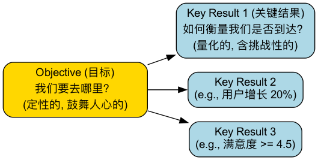

OKR (目标与关键结果)¶
在快速变化、充满不确定性的现代组织中，如何确保团队中的每一个人都能朝着同一个方向、同心协力地前进？传统的、自上而下的绩效考核（KPI）往往过于僵化，容易导致员工只关注自己的指标而忽略了最终的目标。OKR（Objectives and Key Results，目标与关键结果） 正是为应对这一挑战而生的一套强大、敏捷的目标管理框架。它并非绩效考核工具，而是一个旨在统一思想、聚焦重点、促进协作和激发潜能的持续沟通与对齐工具。
OKR的核心思想在于，将组织的精力聚焦在最重要的事情上。它通过设定一个鼓舞人心的、定性的目标（Objective），并辅以2-5个可量化的、用于衡量目标达成度的关键结果（Key Results），来清晰地定义“我们想去哪里”以及“我们如何知道自己正走在正确的路上”。它鼓励透明、协同和自下而上的参与，让每个团队和个人都能清晰地看到自己的工作是如何为组织的宏伟蓝图做出贡献的，从而激发内在的驱动力。
OKR的两大组成部分¶
一个完整的OKR由两个部分构成，它们共同回答了两个核心问题。
-
目标（Objective）：回答“我们想要达成什么？”
- 它应该是定性的、鼓舞人心的、有挑战性的，并且是有时限的（通常为一个季度）。
- 一个好的Objective应该能激发团队的热情，指明一个清晰的方向，而不是一个冷冰冰的数字。
- 例如：“发布一款令用户惊艳的、颠覆性的新版本产品。”
-
关键结果（Key Results）：回答“我们如何衡量我们是否达成了目标？”
- 它必须是定量的、可衡量的、有挑战性的，并且是具体的结果，而非任务（Activities）。
- 每个Objective通常会匹配2-5个KRs。如果KRs全部轻松达成，说明目标定得不够有野心；如果最终完成了70%-80%，则被认为是一次成功的挑战。
- 例如，对于上述目标，其KRs可能是：
- KR1: 新版本的用户净推荐值（NPS）从40提升到60。
- KR2: 核心功能的用户日活跃度（DAU）提升30%。
- KR3: 应用商店的用户评分从4.2星提升到4.8星。
OKR与KPI的核心区别¶

如何实施OKR¶
OKR的实施是一个持续的、有节奏的循环过程，通常以季度为周期。
-
第一步：设定公司级OKR
在每个周期开始前，公司高层需要基于年度战略，共同讨论并设定出1-3个公司层面最重要、最优先的OKR。这些OKR为整个组织指明了本季度的焦点。
-
第二步：设定团队级和个人级OKR
- 对齐与协同：各部门和团队负责人，需要理解公司级的OKR，并思考自己的团队如何能对其做出最大贡献。然后，组织团队成员共同制定出团队的OKR。这通常不是简单的“指标拆解”，而是“目标对齐”。
- 自下而上：鼓励员工基于对团队OKR的理解，设定自己的个人OKR。大约50%-60%的OKR应该来自基层，这能极大地激发员工的主人翁意识。
-
第三步：持续追踪与定期复盘
- 周会（Check-ins）：团队每周花费少量时间，快速同步每个KR的进展、遇到的障碍和信心指数。这不是一次汇报，而是一次敏捷的调整和求助会议。
- 期中审阅（Mid-term Review）：在季度的中间点，进行一次正式的审阅，评估进展是否顺利，是否需要对OKR进行调整或取舍。
-
第四步：季度末的复盘与打分
- 在周期结束时，团队对每个KR的完成情况进行打分（通常采用0-1.0分制）。打分的重点不在于分数本身，而在于复盘讨论：我们学到了什么？哪些做得好？哪些可以改进？为什么某个KR没有完成？
- 完成的OKR并不意味着结束，它所带来的成果和经验，将成为下一个季度制定新OKR的重要输入。
应用案例¶
案例一：一家初创公司的市场团队
- Objective: 成功打入华东市场，建立初步的品牌影响力。
- Key Results:
- KR1: 在上海和杭州获取10个种子客户。
- KR2: 与3家区域性行业媒体达成深度报道合作。
- KR3: 举办一场超过200人参加的线上产品发布会。
案例二：一个产品开发团队
- Objective: 显著提升我们App的用户留存率，让用户爱上我们的产品。
- Key Results:
- KR1: 将新用户的次周留存率从20%提升到35%。
- KR2: 完成并上线用户呼声最高的三个新功能。
- KR3: 将用户反馈的严重Bug数量减少50%。
案例三：人力资源部门
- Objective: 打造业内顶尖的人才吸引力，成为候选人向往的公司。
- Key Results:
- KR1: 将核心技术岗位的平均招聘周期从45天缩短到30天。
- KR2: 在主流招聘网站上的雇主评分从3.8提升到4.5。
- KR3: 成功实施内部员工推荐计划，通过内推完成的招聘比例达到40%。
OKR的优势与挑战¶
核心优势
- 聚焦与对齐：将整个组织的精力都聚焦在少数几个最重要的目标上，确保所有人同向而行。
- 提升透明度与协作：所有团队的OKR都是公开透明的，这极大地促进了跨部门的理解和协作。
- 激发雄心与潜能：鼓励设定有挑战性的“摘星”目标，并将失败视为学习的机会，从而激发团队的创造力和潜能。
- 敏捷与适应性：以季度为周期的快速迭代，使得组织能够更灵活地应对市场的变化。
潜在挑战
- 容易与KPI混淆：如果将OKR直接作为绩效考核的工具，并与奖金挂钩，那么它的所有优点都会荡然无存，员工将不敢再设定挑战性目标。
- 需要文化支撑：OKR的成功，高度依赖于一个开放、信任、鼓励试错的管理文化。
- 制定高质量的OKR很难：写出一个既鼓舞人心又可衡量的OKR，需要反复的思考和练习。尤其是要区分“关键结果（Results）”和“任务（Activities）”。
延伸与关联¶
- SMART原则：是设定一个好的“关键结果（KR）”时，必须遵循的指导原则。一个KR必须是具体的、可衡量的、可实现的、相关的和有时限的。
- KPI（关键绩效指标）：OKR和KPI并非相互排斥，而可以互为补充。KPI可以用于监控那些需要维持在健康水平的、常规性的“业务仪表盘”指标（如网站正常运行时间、客户服务响应时间），而OKR则用于指引那些需要突破和创新的方向。
来源参考：OKR最早由英特尔（Intel）公司的传奇CEO安迪·葛洛夫（Andy Grove）提出，并被谷歌（Google）的早期投资者约翰·杜尔（John Doerr）引入谷歌，发扬光大。约翰·杜尔的著作《这就是OKR：让谷歌、亚马逊实现爆炸性增长的工作法》（Measure What Matters）是推广和普及OKR的最核心、最权威的文献。